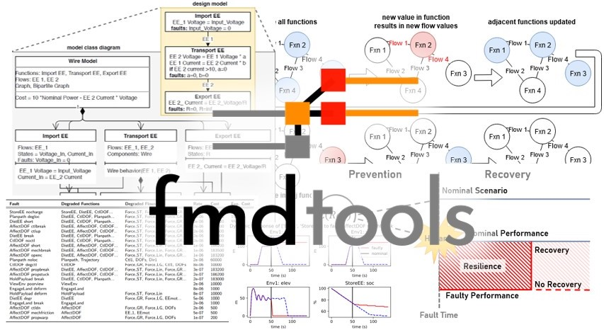

fmdtools Version 2.0-alpha.
{kind=link}
Overview
The main impetus for the development of the fmdtools project was a lack existing tools to enable early function-based fault simulation for early functional hazard assessment. Researchers thus had to re-implement modelling, simulation, and analysis approaches for each new case study or methodological improvement. The fmdtools resolves this problem by separating resilience modelling, simulation, and analysis constructs from the model under study, enabling reuse of methodologies between case studies. Towards this end, the fmdtools package provides three major pieces of functionality:
Model definition constructs which enable systematic early specification of the high level structure and behaviors of a system with concise syntax (fmdtools.define).
Simulation methods which enable the quantification of system performance and propagation of hazards over a wide range of operational scenarios and model types (fmdtools.sim).
Analysis methods for quantifying resilience and summarizing and visualizing behaviors and properties of interest (fmdtools.analyze).
Key Features
fmdtools was developed with a number of unique features that differentiate it from existing safety/resilience simulation tools.
fmdtools uses an object-oriented undirected graph-based model representation which enables arbitrary propagation of flow states through a model graph. As opposed to a procedural directed graph-based model representation (a typical strategy for developing fault models in code in which each function or component is represented by a method, the inputs and outputs are which are connected with connected functions/components in a larger model method), this enables one to:
propagate behaviors in multiple directions in a model graph, e.g., closing a valve will not just reduce flow in the downstream pipe but also increase pressure in upstream pipes.
define the data structures defining a function/component (e.g. states, faults, timed events) with the behavioral methods in a single logical structure that can be re-used and modified for similar components and methods (that is, a class, instead of a set of unstructured variables and methods)
fmdtools can represent the system at varying levels of fidelity through the design process so that one can start with a simple model and analysis and make it more detailed as the design is elaborated. A typical process of representing the system (from less to more detail) would involve:
Creating a network representation of the model functions and flows to visualize the system and identify structurally-important parts of the model’s causal structure
Elaborating the flow attributes and function failure logic in a static propagation to simulate the timeless effects of faults in the model
Adding dynamic states and behaviors to the functions as well as a simulation times and operational phases in a dynamic propagation model to simulate the dynamic effects of faults simulated during different time-steps
Instantiating functions with component architectures to compare the expected resilience and behaviors of each
Defining stochastic behavioral and input parameters to simulate and analyze system resilience throughout the operational envelope
Using optimization methods to search the space of potential hazardous scenarios and find the optimal response parameters to mitigate these scenarios
fmdtools provides convenience methods for quickly visualizing the results of fault simulations with commonly-used Python libraries to enable one to quickly assess:
effects of faults on functions and flows in the model graph at a given time-step
the behavior of system states over time in nominal and faulty scenarios over a range of operational parameters
the effect of model input parameters (e.g., ranges, stochastic inputs) on nominal/faulty operations
the high-level results of a set of simulations in an FMEA-style table of faults, effects, rates, costs, and overall risk
simulation responses over a range or distribution of model and scenario parameters
An overview of an earlier version of fmdtools (0.6.2) is provided in the paper:
fmdtools is a research code and is under active development. As a result, Some use-cases may not work as desired and may change. If you find a bug or would like to contribute, contact the contributors.
Getting Started
The latest public version of fmdtools can be downloaded from the fmdtools github repository e.g., using:
git clone https://github.com/nasa/fmdtools.git
For development and use of this version (e.g., for tutorials and models), we recommended then installing this package using pip:
pip install -e /path/to/fmdtools
A version of the fmdtools toolkit can also be installed directly from the PyPI package repository using pip install fmdtools.
Prerequisites
fmdtools requires Python 3 and depends directly on these packages (see requirements.txt):
scipy
tqdm
networkx
numpy
matplotlib
pandas
ordered-set
dill
recordclass >=0.14.4
pytest
These packages are optional but recommended to enable specific fmdtools use-cases and to work with examples in the repository:
jupyter notebook #(for repository notebooks)
graphviz #(to plot using graphviz options)
pyvis #(for interactive html views of model graphs)
quadpy #(for quadrature sampling)
ffmpeg #(for animations)
shapely #(for multirotor model)
deap #(for optimization of rover faults)
pycallgraph2 #(for model profiling)
These must be installed (e.g. using pip install packagename or conda install packagename) them before running any of the codes in the repository.
Licenses
NASA Open Source Agreement 1.3
fmdtools version 2.0.0
---------------------------
Released under the NASA Open Source Agreement Version 1.3, see
NASA_Open_Source_Agreement_fmdtools.pdf for full details.
Copyright © 2022 United States Government as represented by the Administrator
of the National Aeronautics and Space Administration. All Rights Reserved.
---------------------------
Contributions from fmdtools version 0.6.2 (and prior releases) require the following notice:
MIT License
Copyright (c) 2019 Design Engineering Lab
Permission is hereby granted, free of charge, to any person obtaining a copy
of this software and associated documentation files (the "Software"), to deal
in the Software without restriction, including without limitation the rights
to use, copy, modify, merge, publish, distribute, sublicense, and/or sell
copies of the Software, and to permit persons to whom the Software is
furnished to do so, subject to the following conditions:
The above copyright notice and this permission notice shall be included in all
copies or substantial portions of the Software.
THE SOFTWARE IS PROVIDED "AS IS", WITHOUT WARRANTY OF ANY KIND, EXPRESS OR
IMPLIED, INCLUDING BUT NOT LIMITED TO THE WARRANTIES OF MERCHANTABILITY,
FITNESS FOR A PARTICULAR PURPOSE AND NONINFRINGEMENT. IN NO EVENT SHALL THE
AUTHORS OR COPYRIGHT HOLDERS BE LIABLE FOR ANY CLAIM, DAMAGES OR OTHER
LIABILITY, WHETHER IN AN ACTION OF CONTRACT, TORT OR OTHERWISE, ARISING FROM,
OUT OF OR IN CONNECTION WITH THE SOFTWARE OR THE USE OR OTHER DEALINGS IN THE
SOFTWARE.
TABLE OF CONTENTS
- README
- Development Guide
- Contributions
- Model Development Best Practices
- Plan your model to avoid technical debt
- Don’t copy, inherit and functionalize
- Document your code, sometimes before your write it
- Don’t get ahead of yourself–try to get a running simulation first
- Preserve your prototype setup by formalizing it as a test
- Edit your code
- Structuring a model
- Use model constructs to simplify your code
- Style advice
- See also
- Examples
- Glossary
- Module Reference